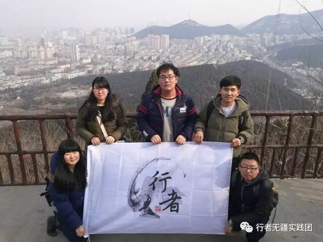
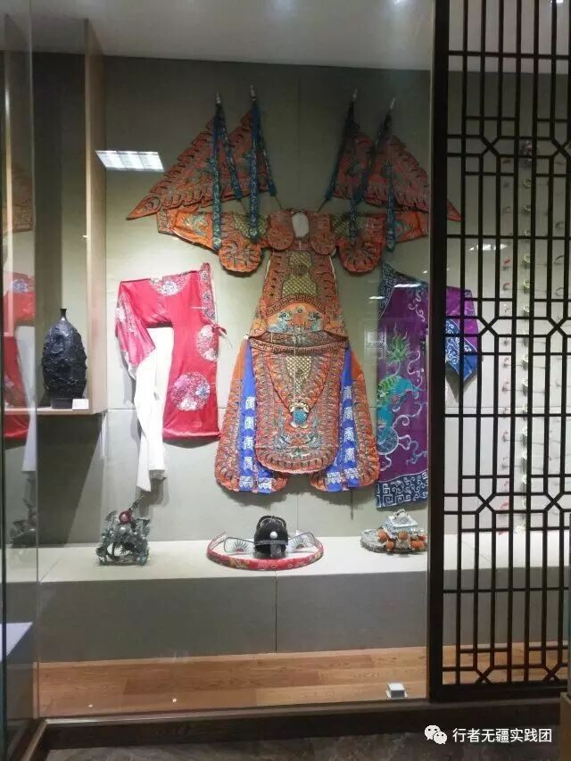
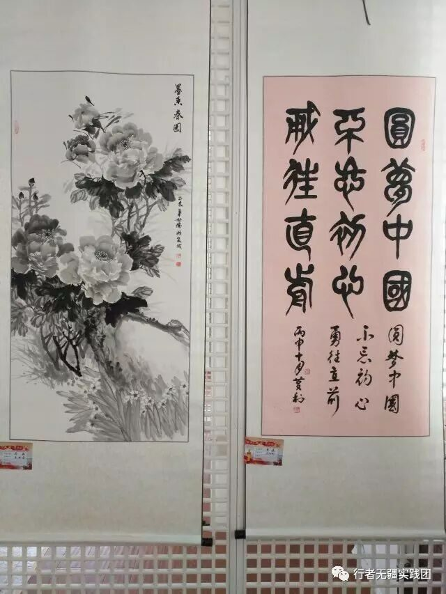

行者无疆|起航——济南

行者无疆|济南（二）
今天团队兵分三路，在不同时间对四个主要文化胜地进行多层次的调研。

大明湖
“四面荷花三面柳，一城山色半城湖”。来到这相传乾隆和夏雨荷相遇的地方，走近历下阁，走进北极阁，走尽湖中园。走过一座座桥，看过一间间祠，无论是老舍纪念堂，还是嫁轩祠，我们都在这个有故事的地方，走着前人走过的路体味着我们自己的感受。大明湖周围的芙蓉街，宽厚里，古老的文化小巷见证了时代变迁。

72泉区
初入趵突泉，看着零散的一个个泉眼，游在其中优游自在的海豹，路过的每一位人都似乎对天下第一泉有着自己的情怀，尤其是对于在这里生活的老人来说，看着趵突泉一天天的“成长”，也似乎对它有了多余别人的关心和爱。看着静静涌动着的泉，我们仿佛也被其中的生命力所感染，看着黑虎泉旁一个个前来打水的居民，突然对这些泉的感受也不太一样起来，对于我们来说的景点，可对于在这座城市中的他们却是生活，或许平淡但却不可或缺。白石泉旁的解放阁，承载着人民解放军的丰功伟绩。


千佛山
千佛山，也正如它的名字一般，一座座高矮大小不一的庙堂、佛像，让走入其中的我们也不禁肃然起敬，看着一个个前来祭拜的人，每一次虔诚的祈祷都仿佛带着所有的祝愿，透过这一柱柱香，一缕缕烟似乎就能看到它们愿望的实现。我们走过了大路、穿过了小巷，看着不同的佛堂感受着属于我们的虔诚。

文化馆
最能代表齐鲁文化的，就要数文化馆了。泥塑篆刻小巧精致，鲁绣微雕巧夺天工，木艺民俗生动有趣，国画书法入木三分。其中，华美的风筝也陈列于馆内，让人不禁想象，一只承载着希望与梦想的风筝，一头是我们牵着丝线，另一头融入了无限信仰翱翔于天。


文化济南，历史泉城，明日我们将结束与你的短暂邂逅，去往五岳之尊泰山。横笔恣泼墨，行者亦无疆！
一起期待行者无疆的未来之旅~